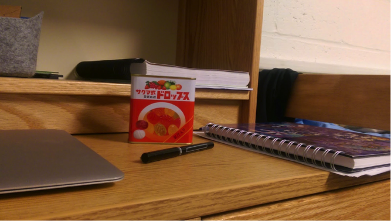

March 10, 2015
As the years go by, I find myself more and more attracted to little things. While I wouldn't call myself a shaker just yet, I've definitely come to appreciate simplicity and pure functionality far more than even just a few years ago.
I found the little basket pictured above at a Hobby Lobby store a few months ago. At that time the decision on Hobby Lobby's controversial contraceptive case was still hotly debated, and I had myself been reflecting on what my stance on the issue was.
Walking around in the store that day, I was struck by just how ordinarily life goes on in the face of national attention and for some, even scandal. For the average employee and shopper, the headlines didn't matter. What mattered were those cute flower wreaths, or in my case, those precious little baskets.
It's so miniature, it can barely even hold my phone without tipping over. But there was just something about its old and hand-made look... I could easily imagine a young girl carrying it around a hundred years ago or so. Maybe her doll owned it, and she had a bigger one. Or maybe some farmer long ago used larger baskets such as these to gather his crops. I guess it's one of those odd moments you really have to experience before you can identify with it, but I was happy to pay the $2 to buy it.
Just last weekend I was shopping with my family in an Asian market when my sister pointed out a small tin of Japanese fruit candy on the shelf. These "Sakuma Drops" were featured in Studio Ghibli's "Grave of the Fireflies", which we both had watched, so we were excited to purchase two tins immediately.
Once again I paid $2 and found myself holding what would ordinarily be just a little trinket. But as I opened up the tin and gave it a shake, the sound of the fruit drops rustling against the metal provoked something powerful in my mind. It wasn't simply that I recalled the emotions in "Grave of the Fireflies" (a masterful movie by the way). Rather I began to see how such a simple little tin could mean so much to kids, parents, and anyone else who enjoyed them. There was a humility in the way I had to pry open the lid that limits children's access to the candy. Its no-nonsense construction and appearance really conveyed the long tradition of the candy, which was first produced in 1908. Beyond just being candy, I guess I could again picture to myself a young girl or boy begging mother to pry open the lid to give him/her a sweet treat.

As I reflect more, I realize that these everyday images have taken on a sort of beauty to me. Life is full of complications, big picture ideas, and other grand images. And these are great to be sure, especially for youth. But what keeps us running day to day are these simple memories, and really, I think life's greatest joys often come from them.
There's a couple more objects in that picture that I could write a paragraph or two about. My trusty Pilot V5 pen, which I've been buying since freshman year in high school, holds a lot of meaning to me as the instrument I used all throughout my journey as a writer in high school. My notebooks, so simultaneously clean, yet brimming with intellectual scraps from my life. And even this computer, my companion for much of the day, who has never failed to boot up when I have work to do, or entertain me when I'm feeling tired or down.
In a sense, I guess these objects are no longer simple to me. Maybe I'm just being overly sentimental. But I have a sense that others feel this way as well. Perhaps all things are just like empty canvases, waiting to be filled with the art of one's life and memories.